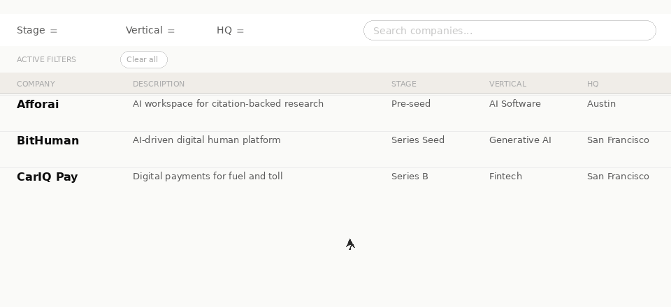
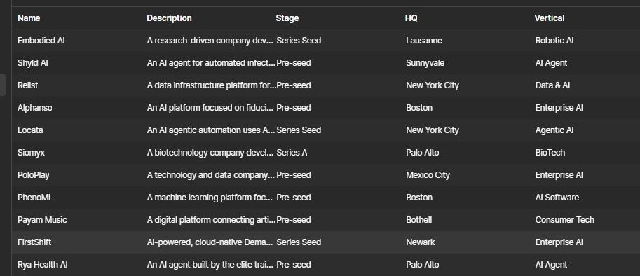

Full Webflow platform for a Silicon Valley AI & DeepTech VC — from brand to scalable CMS and real-time filtering.
Overview
Designed and built a complete platform for Yar Ventures — a VC fund that needed to look as credible as the companies it backs, and scale as fast as its portfolio grows.
Challenge
Yar Ventures had a portfolio, a community of Silicon Valley LPs, and monthly pitch events — but no website that communicated their scale or credibility. Investors needed a way to browse companies; the team needed to update it themselves.
Approach
Built around a multi-collection CMS schema before a single visual was designed. The portfolio filter — stage, vertical, HQ, and live search — was architected using Webflow CMS multi-reference fields and Finsweet CMS Filter for a product-grade experience.
Outcome
Adding a new portfolio company takes minutes. The homepage marquee, filter page, and all listing views update automatically. The design signals institutional trust — and the system behind it is built to scale to hundreds of companies.
Design
Designed to feel trustworthy and structured — without looking corporate or rigid.
Minimal palette, editorial typography, and restrained motion keep the focus on content.
Key Feature
Investors explore 38+ portfolio companies instantly — combining dropdown filters with live text search in a single, seamless flow. Every interaction updates results immediately. No page reloads. No friction.
Live demo — real site

Filter selected → chip appears → results narrow instantly — no page reload
38+
Portfolio companiesfilterable in real time
3
Filters combinedwith live search simultaneously
0
Page reloads— instant updates
CMS Architecture
A structured CMS system powers the entire platform — combining multiple collections into a seamless filtering experience. Data is connected across dimensions, enabling real-time updates without manual syncing.
Startups
Central collection powering the filter page, search, and all listings — 35 companies, all queryable in real time
Stage / Vertical / HQ
Separate filter collections enabling scalable, dynamic filtering — each dimension is its own structured dataset
Multi-reference
Connects collections to support real-time filtering across multiple dimensions — no duplication, no manual syncing
No duplication. No manual updates. Built to scale.
Webflow CMS — Startups collection

Explore more work